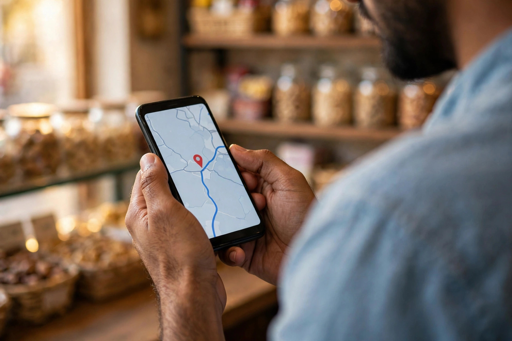

When someone in Mianwali needs a shop, a clinic, a restaurant or a service, they often open Google Maps before they open anything else. They type a few words, look at the pins and the short list of businesses, check the ratings and hours, and then tap call or directions. If your business is missing from that list, or if your listing looks empty and neglected, those customers go to someone else without ever knowing you existed.
Mianwali is a district headquarters and a larger city than many people expect. Its busy bazaars, private clinics, academies and colleges draw customers from the city and from surrounding areas. That also means more businesses are competing for the same map places. The good news is that most listings are only half finished. A complete, accurate and regularly updated profile already puts you ahead of many competitors.
Start With a Complete and Accurate Profile
Your Google Business Profile is the information behind your Maps listing. Fill in every field that honestly applies to your business: the exact business name you use in real life, your correct address or service area, your phone number, your opening hours and a clear description of what you offer. Do not add extra words to your business name to chase searches. Google can suspend listings for that, and customers find it confusing as well.
Check the details a customer would rely on before travelling. Is the pin in the right place? Can someone on a busy road find the entrance from your photos? Are holiday hours updated? A small error, such as an old phone number, can cost you a customer who tried once and then chose the next business on the list.

Choose Categories and Services That Match Your Work
Your main category tells Google what kind of business you mainly are, so choose the closest honest match rather than the broadest one. Then add suitable additional categories and list your real services underneath. A clinic, for example, should not present itself mainly as a general shop, and a showroom should not hide the specific products and services people travel to see.
- Pick one main category that describes your core business.
- Add services in plain words customers would use.
- Keep hours, phone and address the same everywhere online.
- Remove services you no longer offer instead of leaving them listed.
This clarity helps Google match you to the right searches. It also helps customers, because they can see at a glance whether you offer what they came for, instead of calling three businesses to ask the same question.
Use Photos and Reviews to Be the Obvious Choice
Appearing on the map is only half the job. The other half is being chosen. Clear photos of your shopfront, entrance, interior and team help people recognise you and feel confident about visiting. Take them in daylight, keep them honest, and update them when your premises change. Blurry, dark or borrowed pictures do the opposite of building trust.
Reviews work in the same way. Ask happy customers politely for an honest review, make it easy with your review link, and reply to reviews calmly, including the difficult ones. Our separate guide on Google reviews for Mianwali businesses explains how to do this without pressure or shortcuts. Never buy reviews or ask only for positive ones, because customers can sense it and Google can act against it.

Support Your Listing With a Proper Location Page
Your Maps listing becomes stronger when it connects to a website that says the same things clearly. Names, phone numbers and hours should match between your profile, your website and other listings. Your website should also explain your services in more depth than a profile allows, so a customer who wants detail can find it quickly.
You can read more about how we approach this work on our SEO services in Mianwali page. To be plain about where we are: Zaheer Seo Expert is based in Layyah and has no office in Mianwali. We serve Mianwali businesses from Layyah, and the work is done online and by phone, which suits SEO well because profiles, websites and reports can all be handled without travel. The earlier general guide, SEO for Mianwali businesses, gives the wider picture if you are starting from the beginning.
Keep the Listing Alive Month After Month
A profile is not a one-time task. Add new photos from time to time, post short updates when something genuinely changes, check your hours around holidays, and answer questions people leave on your listing. If you move, change number or adjust your services, update the profile the same week, not months later.
Done steadily, this routine keeps your listing accurate and shows customers a living business rather than an abandoned page. In a city where people compare several options quickly, that steady care is often what turns a map view into a call, a visit and a sale.
Frequently Asked Questions
Why does my Mianwali business not appear on Google Maps?
Common reasons are an incomplete or unverified profile, the wrong main category, a missing address or service area, and very few photos or reviews. Work through the profile field by field, choose the category that matches your main work, and keep adding real information.
Can I appear on Maps without a shop customers can visit?
Yes. Many service businesses hide their address and set a service area instead, so customers see the area they cover rather than a home address. Follow Google rules for your type of business and do not use an address where you are not really present.
Do reviews change where I appear on Maps?
Reviews are one of the signals customers and Google both notice. A steady flow of honest reviews, with calm replies from the owner, builds trust and helps people choose you when they compare the businesses shown on the map.
Is Zaheer Seo Expert based in Mianwali?
No. Zaheer Seo Expert is based in Layyah and has no office in Mianwali. SEO and Google Business Profile work for Mianwali businesses is done online and by phone from Layyah.
Want More Customers From Google?
Call 0327 7350830 or email seozaheer14@gmail.com. Zaheer Seo Expert, Layyah - Rajan Shah Road, Rana Nagar, Chak 116 TDA, Pakistan. Open 24 hours.
Get Your SEO Strategy →